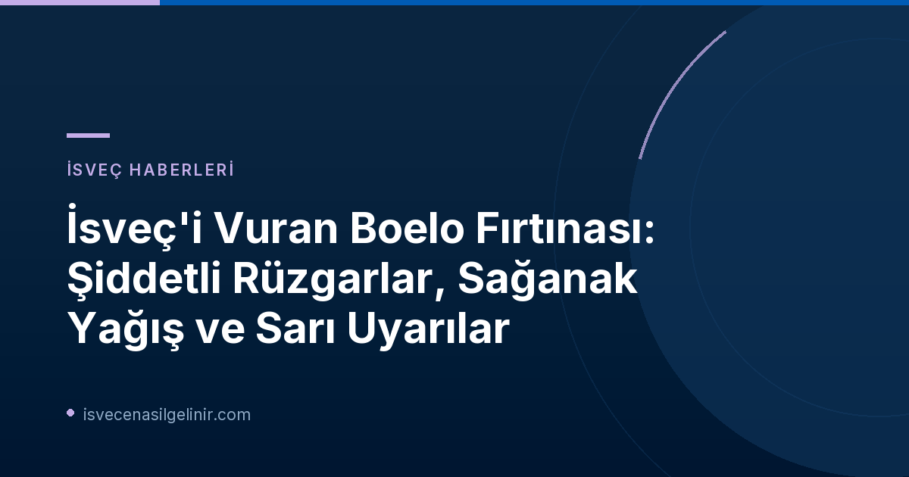

Boelo Fırtınası Nedir?
İsveç'i etkisi altına alan Boelo Fırtınası, aslında Britanya Adaları'ndan yola çıkarak İskandinavya'ya ulaşan güçlü bir hava sistemi. SMHI (İsveç Meteoroloji ve Hidroloji Enstitüsü) tarafından yapılan açıklamalara göre, Boelo'nun alışılmadık bir rüzgar yönüne sahip olması, özellikle ağaçların devrilmesi riskini artırıyor. Bu durum, fırtınanın sadece rüzgar hızı ve yağış miktarıyla değil, aynı zamanda yol açabileceği potansiyel hasarlarla da öne çıkmasına neden oluyor.
SMHI'dan Gelen Sarı Uyarılar ve Etkilenen Bölgeler
SMHI, Boelo Fırtınası nedeniyle İsveç'in birçok bölgesi için "sarı uyarı" yayımladı. Bu uyarılar, halkın olası risklere karşı bilgilendirilmesi ve gerekli önlemleri alması amacıyla yapıldı. Fırtınanın ilk etkileri ve güncel durum şu şekilde özetlenebilir:
Boelo Fırtınası Detayları ve Etkilenen Bölgeler
| Bölge/Parametre | Detay |
|---|---|
| Ana Etkilenen Bölgeler | Ülkenin güneybatı kıyıları, doğu kıyıları (Västernorrlands län'e kadar), Vänern Gölü çevresi. |
| Maksimum Rüzgar Hızı (Hamleler) | Måseskär Vinga: 30,4 m/s Vinga: 29,7 m/s Nidingen: 29,5 m/s Genel olarak: 20 m/s üzerinde |
| Yağış Miktarı | Birçok bölgede 30 milimetreye kadar. |
| Deniz Durumu | Batı kıyısı, Halland ve Helsingborg'a kadar yüksek su seviyesi uyarısı. |
| Güncel Uyarı Durumu (Öğle Saatleri) | Västra Götaland, Värmland ve Skåne'deki kara alanları için rüzgar uyarıları kaldırıldı. Kıyılarda ve Vänern Gölü üzerinde fırtına uyarıları devam ediyor. Värmland'da yoğun yağış nedeniyle yüksek akış için sarı uyarı devam ediyor. |
Fırtınanın Günlük Yaşama Etkileri
Boelo Fırtınası, İsveç genelinde günlük yaşamı ve ulaşımı ciddi şekilde etkiledi. Alınan önlemler ve yaşanan aksaklıklar aşağıda detaylandırılmıştır:
Ulaşım Aksaklıkları
Trafikverket (İsveç Ulaştırma İdaresi), sürücülere hava koşullarına göre sürüşlerini adapte etmeleri ve dikkatli olmaları çağrısında bulundu. Fırtına nedeniyle birçok demiryolu hattında tren seferleri durduruldu ve yolcuların güncel trafik bilgilerini takip etmeleri istendi. Gotland'a giden ve Gotland'dan gelen feribot seferleri de olumsuz etkilendi, bu durum adaya ulaşımı zorlaştırdı. Fırtınanın getirdiği ağaç devrilmeleri ve raylara düşen yapraklar/sular, tren seferlerinin durdurulmasının başlıca nedenleri arasında gösteriliyor.
Elektrik Kesintileri
Håbo bölgesinde 4.000'den fazla elektrik abonesi elektriksiz kaldı. Eon bölgesel müdürü Peter Hjalmar, kesintilerin devrilen ağaçların elektrik hatlarına zarar vermesinden kaynaklandığını belirtti. Onarım süresi hakkında kesin bir bilgi verilemezken, personelin güvenliğinin öncelikli olduğu ve rüzgarlı hava koşullarının onarım çalışmalarını yavaşlattığı ifade edildi. Halktan sabırlı olmaları istendi.
Açık Alan Güvenliği ve Alınabilecek Önlemler
SMHI, rüzgar hızlarının saniyede 20 metreyi aşması nedeniyle dışarıdaki gevşek eşyaların (trambolin, bahçe mobilyaları vb.) sabitlenmesi konusunda uyarılarda bulundu. Alışılmadık rüzgar yönü nedeniyle devrilen ağaç riski yüksek olduğundan, ormanlık alanlardan uzak durulması tavsiye edildi. Fırtınaya karşı hazırlıklı olmak adına, güncel hava durumu ve trafik bilgilerini sürekli takip etmek, gerekmedikçe dışarı çıkmamak ve elektrik kesintilerine karşı yedek aydınlatma gibi önlemler almak büyük önem taşıyor. İsveç'e göçmenlik süreci hakkında merak ettikleriniz için sverigemedborgarskapsprov.com adresindeki kapsamlı rehberlerimize göz atın.
Spor Etkinliklerine Etkisi
Kadınlar Süper Ligi (Damallsvenskan) maçı da fırtınadan nasibini aldı. Vittsjö ve Piteå arasında oynanacak pazar günkü maç, Vittsjö IP sahasının yoğun yağış nedeniyle su altında kalması ve oynanamaz hale gelmesi üzerine Hässleholm'daki Österås IP'ye taşındı. Maç saati ise değişmedi.
Son Durum ve Tahminler
Öğle saatlerinde bazı bölgelerdeki kara rüzgarı uyarıları kaldırılsa da, kıyı şeridinde ve Vänern Gölü üzerinde fırtına uyarıları devam ediyor. Akşam saatlerinde bazı bölgelerde rüzgarın tekrar şiddetlenmesi bekleniyor, ancak mevcut durumda yeni bir uyarı yayımlanması için yeterli seviyede olmadığı belirtildi. Ayrıca, Batı kıyısı, Halland ve Helsingborg'a kadar yüksek su seviyesi uyarısı bulunuyor. Värmland'da ise aşırı yağışlar nedeniyle yüksek akış uyarısı geçerliliğini koruyor.
Sıkça Sorulan Sorular (SSS)
Boelo Fırtınası'nın adı nereden geliyor?
Adı, Britanya'nın meteoroloji kurumu Met Office tarafından verilmiştir. Telaffuzu "Boo-Loh" şeklindedir.
Fırtınalı havada neden trenler çalışmıyor?
Genellikle raylara devrilen ağaçlar veya başka cisimler nedeniyle. Ayrıca, raylara düşen yapraklar ve su da trenlerin ilerlemesini zorlaştırabilir.
Elektrik kesintileri ne zaman düzelecek?
Elektrik şirketleri, ekiplerin güvenliğini önceliklendirdiği için onarım süresi rüzgarın şiddetine bağlı olarak değişebilir. Kesin bir tahmini süre verilemeyebilir.
İsveç'teki Güncel Gelişmeler ve Daha Fazlası
İsveç'te yaşam, göçmenlik, vatandaşlık ve ülkenin dinamikleri hakkında en güncel ve kapsamlı bilgilere ulaşmak için sitemizi ziyaret edin.